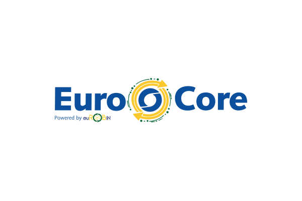
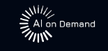
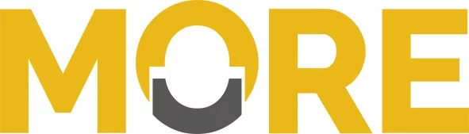

|
 |
euROBIN — EuroCore
2024 - 2025 · Horizon Europe, grant 101070596 euROBIN is a Horizon Europe network of excellence that brings together European robotics and AI research to improve collaboration and innovation. My main role was to develop EuroCore, which adapts the European AI-on-Demand platform to the needs of the robotics community. |
|
 |
AI4Europe
2024 - 2025 · Horizon Europe, grant 101070000 AI4Europe is a Horizon Europe project that develops the European AI-on-Demand (AIoD) platform. My main role was to extend the platform for teaching AI and robotics. |
|
 |
MORE
2020 - 2024 · Marie Skłodowska-Curie Actions, grant 858101 MORE is a European Industrial Doctorate programme on autonomous robotics and decision-making under uncertainty. I was a member as a Marie Skłodowska-Curie PhD student, with industrial secondments at Novatron (Finland) and Liebherr (Austria). |